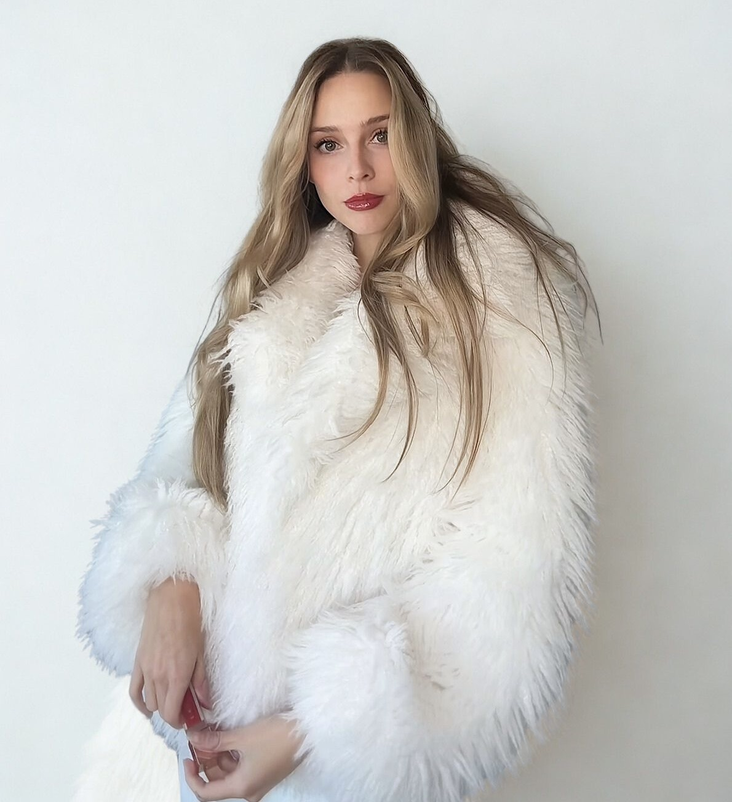

I am a former big-law attorney turned entrepreneur and style muse. After years spent glued to my laptop screen. and living as if I were on mute, I created this space as my first real moment of choosing. One thread, one bold decision, one unapologetic outfit at a time.
I've lived in New York, Los Angeles, Dallas, and now Chicago, each city etching its own imprint on my aesthetic and shaping the way I understand style, identity, and self-expression.
This website is where I bring together everything I love: curated fashion, global inspiration, and a belief that what we wear is one of the most intimate ways we show the world who we are. Because the pieces we reach for are never just clothes. They are declarations of the people we are becoming.
I hope you find something here that makes you feel the way fashion has always made me feel: powerful, brave, and beautifully yourself.